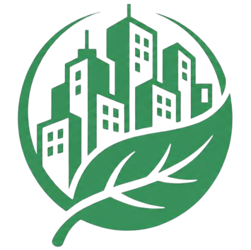

Halo, Warga Gresik 👋
Mari wujudkan kota yang bersih dan berkelanjutan. Laporkan perbaikan, kelola sampahmu secara pintar, dalam satu platform.
Mulai Jelajah
Statistik Kota
Mau Mulai dari Mana?
Pilih salah satu fitur di bawah ini untuk mulai menjelajahi KotaKu.
Mengenal Platform KotaKu
Pahami landasan teori ekonomi sirkular, cara kerja fitur interaktif kami, serta literasi hijau untuk mendukung keberlanjutan kota cerdas.
Kajian Teori: Ekonomi Sirkular
Berbeda dari sistem linier (Buat → Pakai → Buang), Ekonomi Sirkular berfokus pada mempertahankan nilai produk, bahan, dan sumber daya selama mungkin dalam siklus ekonomi.
- Reduksi Limbah di Sumber Utama
- Daur Ulang & Optimalisasi Energi
Smart City & Partisipasi Warga
Kota Cerdas memanfaatkan teknologi digital dan data real-time untuk meningkatkan efisiensi operasional layanan publik dan mempercepat respon terhadap masalah lingkungan lokal.
- Pelaporan Geospasial Berbasis Lokasi
- Transparansi Perbaikan Infrastruktur
Peta Warga
Fitur interaktif untuk memetakan titik kerusakan lingkungan, tumpukan limbah, serta jadwal perbaikan resmi.
AR Waste Scanner
Pemindaian kamera berbasis AI untuk mengenali jenis sampah, nilai ekonominya, dan petunjuk pemilahannya.
Kalkulator Dampak
Konversi kuantitas sampah daur ulang menjadi estimasi Rupiah, penghematan energi (kWh), dan reduksi CO₂.
Artikel & Referensi
Lihat SemuaStrategi Zero Waste di Lingkungan Rumah
Panduan praktis memulai gaya hidup minim sampah dari rumah melalui metode pemilahan 3R yang efektif.
Baca Selengkapnya
Implementasi IoT untuk Smart City
Pelajari bagaimana sensor pintar dan data real-time mengubah cara kota mengelola fasilitas dan infrastruktur publik.
Baca Selengkapnya
Transisi Menuju Energi Terbarukan
Mengenal berbagai sumber energi ramah lingkungan yang dapat diterapkan pada level komunitas dan wilayah residensial.
Baca SelengkapnyaYuk, Ikut Bergerak
Pantau kondisi sekitarmu dan ikuti tantangan mingguan — dua langkah kecil yang langsung berdampak untuk kotamu.
Tantangan Minggu Ini
Masukkan minimal satu jenis sampah di Kalkulator untuk melihat estimasi nilai & dampaknya.
Belum dimulai — terdeteksi otomatis
Buka KalkulatorPantauan Laporan Warga
Platform interaktif untuk memetakan dan melaporkan kerusakan infrastruktur serta masalah lingkungan.
Peta Laporan Warga
Detail Laporan
Klik salah satu penanda (marker) di peta untuk melihat foto dan detail kerusakan wilayah.
Judul Laporan
Tanggal
Deskripsi masalah akan muncul di sini.
Koordinat: -
Jadwal Perbaikan
Pantau jadwal perbaikan infrastruktur dari titik-titik yang telah dilaporkan warga di peta.
Bulan Tahun
Klik pada tanggal dengan indikator hijau untuk melihat detail perbaikan.
Perbaikan Aspal
Jl. Merdeka Blok B
AR Waste Scanner
Nyalakan kamera Anda untuk mendeteksi dan mengklasifikasikan jenis material sampah secara real-time — botol plastik, kaleng, kertas/buku, kardus, kaca, hingga elektronik (hp, dll).
Kamera Nonaktif
Berikan izin browser untuk mengakses kamera.
Sistem AI Siaga
Arahkan kamera ke sampah dan tekan tombol pindai.
Botol Plastik PET
Polimer termoplastik mudah didaur ulang kembali.
- Estimasi Berat
- 0.02 Kg
- Nilai Ekonomi
- Rp 2.500 / Kg
Kalkulator Ekonomi Sirkular
Ubah kuantitas sampah rumahan Anda menjadi konversi rupiah dan reduksi emisi karbon.
Botol Plastik (Pcs)
Kaleng Bekas (Pcs)
Kardus Bekas (Kg)
Kertas / Buku Bekas (Kg)
Pecahan Kaca / Botol (Pcs)
E-waste / Elektronik (Kg)
Nilai hanya estimasi kasar — setorkan ke drop-box e-waste resmi, bukan bank sampah biasa.
- Total Berat
- 0 kg
- Nilai Jual
- Rp 0
- Reduksi CO₂
- 0 kg
- Energi Dihemat
- 0 kWh